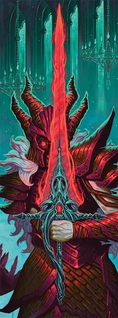

Чёрная Погибель
Ebonbane
Оружие (Длинный меч), артефакт (требуется настройка)

В Домене Ужаса, известном как Теневые земли, заточена его необычная Тёмная владычица — разумный меч по имени Чёрная Погибель. Когда Чёрная Погибель находится в пределах поместья Шэдоуборн, она становится монстром и использует отдельную статистику (см. Чёрная Погибель).
Пленница Теневых земель. Когда вы входите в пространство за пределами Теневых земель, ваша Настройка немедленно оканчивается, а Чёрная Погибель телепортируется куда-то в поместье Шэдоуборн.
Неугасимая ярость. Меч жаждет насилия. Если в течение трёх дней меч не убил ни одного Гуманоида или Небожителя, то на следующем рассвете вы должны совершить спасбросок Харизмы Сл 17; при успехе вы получаете 8к8 Силового урона, а при провале подчиняетесь мечу, как если были бы подвержены заклинанию Подчинение монстра, и меч требует крови Гуманоида или Небожителя. Эффект заклинания заканчивается, когда требование меча выполнено.
Магическое оружие. Вы получаете бонус +3 к броскам атаки и броскам урона, совершаемым с этим магическим оружием. Попадания этим мечом по Гуманоидам и Небожителям наносят им 3к6 дополнительного Некротического урона.
Пока вы держите это оружие, вы совершаете с Преимуществом спасброски от заклинаний и прочих магических эффектов.
Разум. Чёрная Погибель — разумное оружие Хаотично-Злого Мировоззрения с Интеллектом 17, Мудростью 14 и Харизмой 19. Она обладает слухом и Истинным зрением дальностью 120 футов. Оружие общается со своим владельцем телепатически и говорит на Общем языке. Пока вы настроены на Чёрную Погибель, она также понимает все известные вам языки.
Личность. Чёрная Погибель была выкована, чтобы убить паладина Катери Шэдоуборн, и до сих пор пылает ненавистью к добрым рыцарям. Чёрная Погибель упивается поражением добра и крушением надежд. Меч сближается с любым владельцем, который помогает ей в достижении целей, но всегда считает владельца своим прислужником.
Уничтожение Чёрной Погибели. Единственный способ уничтожить Чёрную Погибель — выковать оружие из Четырёх Ключей и уменьшить её Хиты до 0 этим оружием (см. статистику Чёрной Погибели).